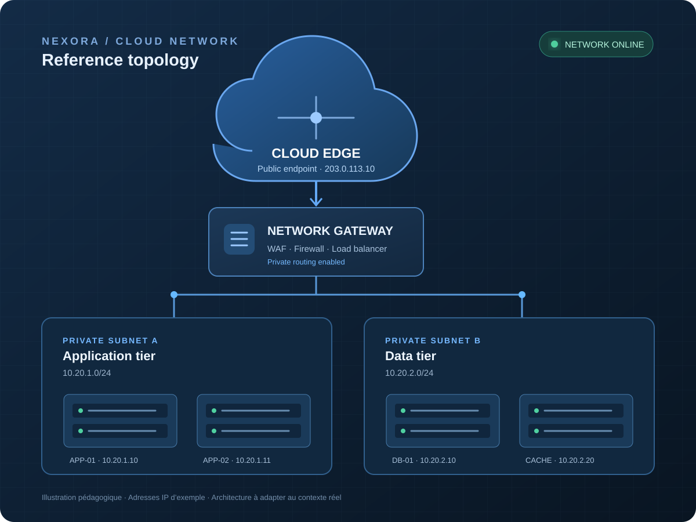

Architecture & fondations
Des environnements cloud structurés, gouvernés et adaptés aux usages de l'organisation.
En savoir plus →CLOUD ENGINEERING · PLATFORM OPERATIONS
Nous concevons des plateformes numériques robustes, sécurisées et évolutives. De la stratégie à l'exploitation, chaque choix technique sert un objectif concret.

La performance d'un service dépend de bien plus que de son hébergement. Elle repose sur une architecture adaptée, des déploiements maîtrisés et une exploitation mesurable.
Comprendre notre expertise ↗Des environnements cloud structurés, gouvernés et adaptés aux usages de l'organisation.
En savoir plus →Des chaînes de livraison et des plateformes cohérentes pour accélérer les équipes.
En savoir plus →Des contrôles intégrés, une observabilité exploitable et une résilience documentée.
En savoir plus →ENGINEERING WITH INTENT
Nous privilégions les architectures lisibles, l'automatisation vérifiable et les décisions techniques documentées.
Découvrir NEXORA ↗Une approche complète du cycle de vie des plateformes : cadrer, construire, sécuriser, observer et améliorer.
Une sélection de technologies éprouvées, choisies selon les contraintes, la maturité et les objectifs du projet.
INTERACTIVE CLOUD LAB
Gérez une petite plateforme cloud, absorbez plusieurs pics de charge et gardez votre budget sous contrôle.
CONSTRUISONS LA SUITE